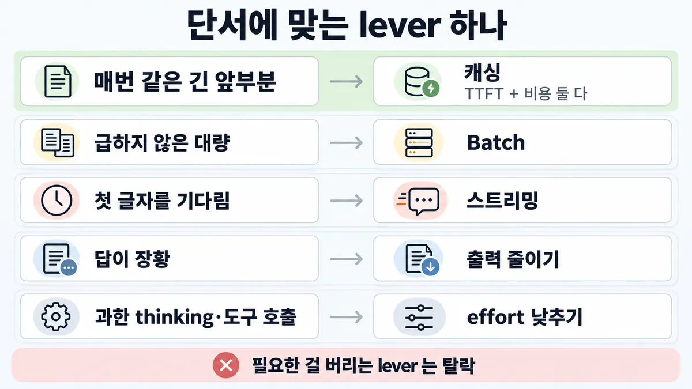
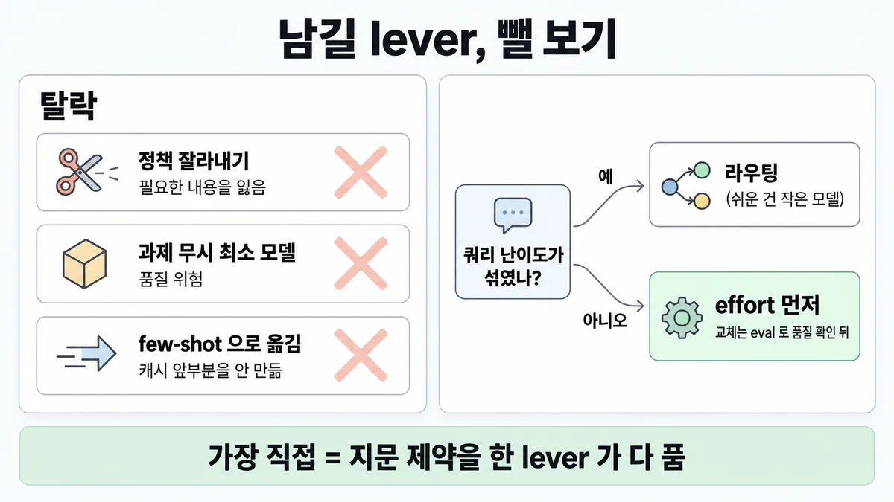

■ 최적화 lever 하나 고르기
왜 배우나 — 시험이 요구하는 것
시험 목표 4.5 토큰·지연·비용 최적화 · D4 평가 16%Optimize token usage, latency, and cost-performance trade-offs
이 개념으로 푸는 판단 (할 수 있어야 하는 것)
- 4.5② 보기마다 다른 최적화 — 이 시나리오의 레버는 무엇 하나? — 시나리오 단서 → 레버 하나 (캐싱 · 배치 · 라우팅/effort · 스트리밍)
- 1.6③ 한 건에 얼마, 한 달에 얼마? — 비용 축을 숫자로 — 요청당 비용으로 설계안 비교
- 3.3① 상담원이 "답 초안이 늦게 뜬다"고 한다 — 모델부터 바꾸나? — 지연 손잡이 고르기 (스트리밍 · 캐싱 · 출력 길이 · effort · 모델 교체)
한눈에
보기마다 다른 최적화가 섞여 나오면 지문이 든 제약(비용 · 지연(latency) · 처리량)과 단서(매번 같은 앞부분 · 마감 없음 · 첫 글자 기다림 · 장황)를 읽고, 그 제약을 "가장 직접" 푸는 lever(손잡이) 하나를 고름. 필요한 걸 버리는 lever 는 탈락 ✓ 확인 (샘플 2)
lever 본문은 각 카드에 — 여기는 단서 → lever 짝과 탈락 기준만
비유 성능 튜닝. 병목(CPU·디스크·네트워크) 하나를 먼저 찾고 거기에 맞는 lever 만 돌림. 디스크 병목에 CPU 증설은 돈만 씀


ELI5
막힌 수도관을 고치는 거예요. 어디가 막혔는지 보고 그 자리만 뚫어요.
- 물이 늦게 나오면 꼭지 쪽을, 물값이 많이 나오면 새는 곳을 봐요.
- 관을 잘라서 짧게 만들면 물은 빨리 오지만 필요한 방에 물이 안 가요.
- 두 군데가 다 문제면 한 번에 둘 다 고치는 수리가 제일 좋아요.
- 이 쪽은 "언제 다른 수리가 더 맞나"를 모아 둔 곳이에요.
개념 설명
원리
lever(손잡이)마다 줄이는 것이 다름
- 캐싱 : 매번 같은 앞부분을 다시 안 읽음 → 첫 토큰(TTFT)과 입력 비용이 같이 줄어듦. 출력은 그대로.
- Batch : 급하지 않은 요청을 모아 입력·출력 모두 50% 할인. 대신 끝나는 시각 약속이 없음.
- 스트리밍 : 첫 글자가 먼저 보여 기다림이 짧게 느껴짐. 토큰 수·총 시간은 그대로 (업계 일반).
- 출력 줄이기 : 생성 토큰이 줄어 전체 시간과 출력 비용이 같이 줄어듦. 출력 단가 = 입력의 5배라 효과가 큼.
- effort : 한 모델 안에서 thinking(사고)·도구 호출·답의 토큰을 줄임. 능력 일부를 내줌.
- 라우팅 · 멀티 모델 : 쉬운 일은 싼 모델로 → 대부분 토큰이 낮은 요율.
"가장 직접" 의 뜻
- 지문이 든 제약(예 : 지연(latency) + 비용)을 한 lever 가 다 풀면 그 lever 가 답. 한쪽만 풀면 약한 보기.
- 필요한 걸 버려서 얻는 절감(잘라내기 · 무작정 최소 모델)은 "직접"이 아니라 품질을 내주는 거래 → 탈락.
핵심 질문 두 개
- 이 지문이 말한 제약은 무엇 무엇인가 (비용 · 지연 · 처리량 · 마감)?
- 이 lever 는 그 제약 전부를 줄이는가, 아니면 무엇을 내주나?
규칙과 판단


갈림길
①② 단서로 lever [4.5②]
캐싱
안 바뀌는 건 앞에 두고 캐싱 → TTFT 와 per-request cost 를 같이 줄이고 필요한 문맥은 안 버림 (샘플 2 정답) ✓ 확인
Batch
입력·출력 모두 50% 할인. 완료 시각 약속은 없음 (◆ Batch API vs 동기 호출) ✓ 확인
스트리밍
체감 반응성을 크게 올림. 비용·총 시간은 그대로 업계 일반
출력 줄이기
"짧게 답해" + max_tokens 로 상한 (■ max_tokens 와 긴 출력) ✓ 확인
effort 낮추기
얻는 것은 지연·비용, 내주는 것은 능력 일부 — eval 로 확인 ✓ 확인
다음 물음 — 쿼리 난이도가 한결같나?
④ 모델 쪽 [4.5②] [2.1②]
라우팅 · 멀티 모델
쉽고 흔한 질문은 작은 모델, 어렵고 드문 건 큰 모델 → 대부분 토큰을 낮은 요율로 ✓ 확인
effort 먼저
모델 바꾸기보다 effort 조정이 나은 경우가 많음. 그래도 품질 여유가 남으면 더 작은 모델 ✓ 확인
eval 먼저
좋은 평가 셋이 모델 고르기에서 가장 중요한 단계 ✓ 확인
③ 탈락 보기 [4.5②]
탈락
필요한 정책을 잃음 (샘플 2 A) ✓ 확인
탈락
무작정 낮추면 품질 위험 (샘플 2 B) ✓ 확인
탈락
캐시 가능한 재사용 앞부분을 안 만듦 (샘플 2 D) ✓ 확인
탈락
배치는 완료 시각을 내줌 · effort 를 올리면 토큰이 늘어 비용 증가 ✓ 확인
남김 · 가장 직접
"가장 직접" = 지문이 든 제약을 한 lever 가 다 푸는가 ✓ 확인
나머지 규칙
-
재기 : eval 셋이 있으면 지연 · 토큰 사용량 · 작업당 비용 · 오류율을 고정 과제 은행에서 기준선으로 봄 → lever 전후 비교 ✓ 확인. 한 번에 여러 lever 를 켜면 어느 게 효과인지 못 가름 업계 일반. 운영(production) 비용 추적은 ■ 비용 급증 추적
비용 줄이는 공식 순서(맞는 모델 → 캐싱 → 배치 → 사용 패턴 감시)의 본문 = ■ per-request cost
규칙 원문 ①②③④ (갈림길로 그린 규칙)
-
단서 → lever 짝 (각 칸 = ✓ 확인, 표로 읽는 법 자체는 업계 일반) [4.5②]
단서 lever 얻는 것 내주는 것 매번 같은 긴 앞부분 캐싱 (안 바뀌는 건 앞에 둠) TTFT + per-request cost 5분 캐시는 쓰기 비용 1.25배 — 읽기 1번부터 이득 · 최소 길이 미달이면 조용히 안 됨 (■ 프롬프트 캐싱) 급하지 않은 대량 Batch 입력·출력 모두 50% 할인 완료 시각 (대부분 1시간, 24시간 넘으면 만료) 첫 글자 기다림 스트리밍 체감 반응성 없음 — 대신 비용·총 시간도 그대로 업계 일반 장황 · 전체 시간 김 출력 줄이기 (프롬프트 + max_tokens)전체 시간 · 출력 비용 한도가 낮으면 잘림 과한 thinking(사고)·도구 호출 effort 낮추기 지연 · 비용 능력 일부 — eval 로 확인 난이도 섞인 쿼리 라우팅 · 멀티 모델 대부분 토큰을 낮은 요율로 분류 단계 · 어려운 걸 작은 모델로 보낼 위험 업계 일반 -
"가장 직접" = 지문이 든 제약을 한 lever 가 다 푸는가. 지연 + 비용 둘 다 → 캐싱(둘 다 줄임). 스트리밍은 비용을 못 줄이고업계 일반, 배치는 지연을 늘림 ✓ 확인 (샘플 2)
여러 lever 가 다 맞으면 겹쳐 씀 : 배치와 캐싱 할인은 곱해짐 ✓ 확인 → 설명 쪽 뒤집히는 때 1
-
탈락 기준 = 필요한 걸 버리는 lever : 잘라내기(A) · 과제 무시 최소 모델(B) · 구조만 옮기기(D) ✓ 확인 (샘플 2) / 지문에 없는 제약을 푸는 lever(지연 문제에 배치 · 비용 문제에 effort ↑) ✓ 확인
-
모델 쪽 순서 : 한 모델 안 effort 조정이 먼저 → 부족하면 모델 교체 ✓ 확인. 교체·다운은 eval 로 품질 확인 뒤 ✓ 확인. 난이도가 섞였으면 라우팅(쉬운·흔한 건 Haiku 급, 어렵고 드문 건 큰 모델) · 멀티 모델(어려운 결정만 어드바이저로 올리는 실행자 · 대량 일을 싼 워커에 넘기는 orchestrator(지휘자)) ✓ 확인
더 깊이 : 판단 규칙 · 상황 변수 (설명)
판단 규칙
| 조건 | 답 | 등급 | 근거 |
|---|---|---|---|
| 매번 같은 긴 앞부분 + 짧게 바뀌는 질문, 지연·비용 둘 다 | 안 바뀌는 건 앞에 두고 캐싱 | ✓ 확인 | sample-questions-p6-7 64~65줄 "reducing both time-to-first-token and per-request cost without discarding required context" |
| 비용 줄이려 정책 잘라내기 · 최소 모델 · few-shot 으로 옮기기 | 셋 다 오답 | ✓ 확인 | sample-questions-p6-7 66~67줄 "Truncation (A) loses needed policy; downsizing blindly (B) risks quality; relocating to few-shot (D) does not create a cacheable, reusable prefix." |
| 급하지 않은 작업 | Batch | ✓ 확인 | pricing en 348줄 "Use the Batch API for non-time-sensitive tasks" |
| 사용자가 출력을 기다림 (체감) | 스트리밍 | ✓ 확인 | reduce-latency ko 41줄 (체감 반응성) |
| 답이 장황 · 출력이 김 | "짧게" 요청 + max_tokens 상한 |
✓ 확인 | reduce-latency ko 33·34줄 |
| 한 모델 안에서 지연·비용을 더 줄여야 | effort 조정이 모델 교체보다 먼저 | ✓ 확인 | choosing-a-model en 8줄 "Tuning effort is often a better lever than switching models." |
| 쉬운·흔한 질문과 어렵고 드문 질문이 섞임 | 라우팅 (작은 모델 ↔ 큰 모델) | ✓ 확인 | building-effective-agents en 81줄 |
| 비싼 모델 하나로 모든 토큰을 씀 | 멀티 모델 (실행자→어드바이저 · orchestrator→싼 워커) | ✓ 확인 | choosing-a-model en·ko 83줄 |
| lever 효과를 재야 함 | eval 셋 고정 과제에서 지연·토큰·작업당 비용·오류율 기준선 | ✓ 확인 | demystifying-evals en 52줄 |
| lever 둘이 다 맞음 (반복 앞부분 + 급하지 않음) | 겹쳐 씀 — 배치·캐싱 할인은 곱해짐 | ✓ 확인 | pricing en 89·401줄 |
상황 변수
| 변수 | 값 | 답 쪽 | 등급 | 근거 |
|---|---|---|---|---|
| 제약 | 지연 + 비용 | 캐싱 (둘 다 줄임) | ✓ 확인 | 판단 규칙 1 |
| 제약 | 비용만 · 마감 없음 | Batch (+ 캐싱 할인도 같이 받음) | 확인·계산 | 판단 규칙 3 · 뒤집히는 때 1 |
| 제약 | 체감 지연만 | 스트리밍 | ✓ 확인 | 판단 규칙 4 |
| 제약 | 사람이 기다림 + 비용 | 배치 탈락 → 캐싱 · 출력 줄이기 · effort | ✓ 확인 | ◆ Batch API vs 동기 호출 |
| 앞부분 길이 | 모델의 최소 캐시 길이 미만 | 캐싱 안 먹음(오류 없이) → 다른 lever | ✓ 확인 | prompt-caching en 177~183·188줄 (Sonnet 5 1,024 · Haiku 4.5 4,096 · Opus 5.5 512) |
| 쉬운 쿼리 비율 | 높음 (예 90%) | 라우팅이 크게 쌈 | 계산 | 뒤집히는 때 3 |
| 쉬운 쿼리 비율 | 낮음 (약 21% 미만, 아래 예) | 라우팅이 오히려 비쌈 → effort | 계산 | 뒤집히는 때 3 |
| 배치 안 캐시 적중률 | 보장 없음(되는 만큼 · 보통 30~98%) | 낮으면 캐싱 할인을 같이 받는 이득 작음 | 계산 | 뒤집히는 때 1 |
| 품질 여유 | eval 로 확인 안 됨 | lever 전에 eval | ✓ 확인 | choosing-a-model en·ko 73줄 |
연습 문제
고객지원 Agent 는 요청마다 같은 환불·교환 정책 문서 8천 토큰을 맨 앞에 붙여같은 앞부분 보낸다. 상담원 화면의 첫 응답이 느리고 per-request cost(요청당 비용)도 줄이라지연·비용는 요구가 왔다. 팀원은 정책 문서를 앞 1,000 토큰만 남기고 자르자고 한다. 가장 직접 푸는 lever 는?
시험 대비
함정
- 비용 줄이려 정책을 잘라냄 / 과제 무시하고 제일 작은 모델 / 정책을 few-shot 블록으로 옮김 → 셋 다 오답 (샘플 2) ✓ 확인
- 지연·비용 둘 다인데 "스트리밍" → 체감만, 토큰 비용 그대로 업계 일반
- 사람이 기다리는 일에 "배치로 50%" → 완료 시각 약속이 없음 ✓ 확인
- 비용 문제에 "effort 올리기" → 토큰이 늘어 비용 증가 ✓ 확인
- lever 를 한꺼번에 여러 개 켬 → 무엇이 먹혔는지 모름, 근거 없는 조합 업계 일반
- 캐싱 손익분기를 "요청 2~3회"로 외움 → 5분 캐시는 읽기 1번 · 1시간 캐시는 읽기 2번부터 이득 ✓ 확인
- "모델 교체는 항상 오답" → 아님. effort 로도 모자라고 eval 로 품질을 확인하면 맞는 답 ✓ 확인
신호
"Ordering stable content first and enabling prompt caching lets repeated prefixes be reused, reducing both time-to-first-token and per-request cost without discarding required context." (가이드 샘플 2)
"Truncation (A) loses needed policy; downsizing blindly (B) risks quality; relocating to few-shot (D) does not create a cacheable, reusable prefix." (가이드 샘플 2)
"Tuning effort is often a better lever than switching models."
"Use the Batch API for non-time-sensitive tasks"
"Routing easy/common questions to smaller, cost-efficient models like Claude Haiku 4.5 and hard/unusual questions to more capable models"
"Once evals exist, you get baselines and regression tests for free: latency, token usage, cost per task, and error rates can be tracked on a static bank of tasks."
더 깊이 : 뒤집히는 때 · 오답 재료 (설명)
뒤집히는 때
1. "lever 하나" 인데 둘을 겹치는 게 답인 때
- 조건 : 매번 같은 앞부분 6천 토큰 + 질문 300 + 출력 500, 밤새 처리하면 되는 일(마감 없음), Sonnet 5.
- 계산 (백만 토큰당 입력 $2 · 출력 $10 · 5분 쓰기 $2.50 · 읽기 $0.20, 배치 = 전부 × 0.5) :
- 동기 · 캐시 없음 = 6,300 × $2 + 500 × $10 = $0.0126 + $0.005 = $0.0176
- 동기 · 캐시 적중 = 6,000 × $0.20 + 300 × $2 + $0.005 = $0.0068
- 배치만 = $0.0088
- 배치 + 캐싱, 적중률 h : 0.5 × [h × $0.0068 + (1−h) × $0.0206] (미스면 쓰기 1.25배 = 6,000 × $2.50 + $0.0006 + $0.005 = $0.0206)
-
h = 98% → 약 $0.0035 (배치만의 약 40%) · h = 30% → 약 $0.0082 (배치만과 거의 같음)
-
판단 : 제약이 "비용"하나여도 단서 두 개(반복 앞부분 · 마감 없음)가 다 있으면 겹쳐 씀. 단 배치 안 캐시 적중은 보장 없음(되는 만큼)이라 적중률이 낮으면 겹친 이득이 작음.
- 전제 : 적중률 h 는 가정 · 앞부분은 요청마다 같은
cache_control블록 · 가격 = 2026-09-28 조회값. - 등급 : 계산 (배수·곱해짐은 확인)
- 근거 : prompt-caching ko 38줄 표 · pricing en 89·401줄 · batch-vs-sync 카드(적중 보장 없음 · 30~98%)
2. "작은 모델로 내리면 싸다" 가 틀리는 때
- 조건 : 앞부분 3천 토큰(매번 같음) + 질문 200 + 출력 300. Sonnet 5 에서 캐싱 적중 중. 비용을 더 줄이려 Haiku 4.5 로 내리자는 안.
- 계산 :
- Sonnet 5 캐시 적중 = 3,000 × $0.20 + 200 × $2 + 300 × $10 = $0.0006 + $0.0004 + $0.003 = $0.0040
- Haiku 4.5 = 최소 캐시 길이 4,096 미만이라 캐싱 안 됨 → 3,200 × $1 + 300 × $5 = $0.0032 + $0.0015 = $0.0047
-
→ 단가가 절반인 모델로 내렸는데 요청당 약 18% 비쌈.
-
전제 : 두 모델의 토큰 수가 같다고 봄. 실제로 Sonnet 5 는 새 토크나이저라 같은 글을 약 30% 더 셈 → Sonnet 5 쪽이 약 $0.0052 가 되어 Haiku 가 약간 쌈. 결론 = 단가표만 보고 "절반 값"을 기대하면 틀림, 캐싱 최소 길이·토크나이저까지 넣어 계산해야 함.
- 등급 : 계산 (최소 길이·단가·토크나이저 30% 는 확인)
- 근거 : prompt-caching en 182·183·188줄 · prompt-caching ko 38줄 표 · 릴리스 노트 en 168줄
3. 라우팅이 손해인 때
- 조건 : 분류 쿼리, 쿼리당 입력 1,500 · 출력 200. 지금은 전부 Opus 5.5($4/$20). 라우터 = Haiku 4.5 한 번(입력 1,500 · 출력 10).
- 계산 :
- Opus 5.5 전부 = 1,500 × $4 + 200 × $20 = $0.010
- Haiku 4.5 한 건 = 1,500 × $1 + 200 × $5 = $0.0025 · 라우터 = $0.00155
- 쉬운 비율 90% → $0.00155 + 0.9 × $0.0025 + 0.1 × $0.010 = $0.0048 (약 52% 절감)
- 쉬운 비율 30% → $0.0093 (약 7% 절감, 오분류 위험까지 지면 약함)
-
손익 : $0.00155 = s × $0.0075 → s ≈ 21%. 쉬운 쿼리가 약 21% 미만이면 라우터 비용 때문에 더 비쌈.
-
판단 : 난이도가 대부분 쉬울 때만 라우팅. 섞였어도 어려운 쪽이 많으면 effort 조정이 먼저.
- 전제 : 두 모델 토큰 수 같다고 봄 · 오분류 비용 뺌 · 가격 = 2026-09-28 조회값.
- 등급 : 계산
- 근거 : prompt-caching ko 38줄 표 · building-effective-agents en 81줄 · choosing-a-model en 8줄
4. 스트리밍이 정답인 때
- 조건 : 제약이 "사용자가 답이 늦게 뜬다고 느낌" 하나뿐이고 비용 말이 없음.
- 판단 : 스트리밍이 가장 직접. 캐싱은 앞부분이 매번 같을 때만, 출력 줄이기는 답 내용을 바꿈. 지문이 "첫 글자까지"와 "다 받기까지" 중 무엇인지 먼저 가름 → ◆ TTFT vs 응답 완료 지연.
- 등급 : ✓ 확인 (스트리밍 = 체감) · 업계 일반 (총 시간 그대로)
- 근거 : reduce-latency ko 41줄
오답 재료
| 오답 | 왜 끌리나 | 왜 틀리나 | 등급 | 근거 |
|---|---|---|---|---|
| "정책 문서를 앞 1,000 토큰만 남기고 자름" | 입력이 바로 줄어 보임 | 필요한 정책을 잃음 | ✓ 확인 | sample-questions-p6-7 66줄 |
| "과제와 상관없이 가장 작은 모델로" | 단가가 제일 쌈 | 무작정 낮추면 품질 위험 | ✓ 확인 | sample-questions-p6-7 66줄 |
| "정책을 few-shot 예시 블록으로 옮김" | 구조를 바꾸면 나아 보임 | 캐시 가능한 재사용 앞부분을 안 만듦 | ✓ 확인 | sample-questions-p6-7 67줄 |
| "지연·비용 둘 다니까 스트리밍" | 지연 = 스트리밍으로 외움 | 체감만, 토큰 비용 그대로 | 업계 일반 | reduce-latency ko 41줄("체감") |
| "상담원이 기다리지만 대량이니 배치로 50%" | 50% 가 커 보임 | 완료 시각 약속이 없음 | ✓ 확인 | ◆ Batch API vs 동기 호출 |
| "품질·비용 둘 다 위해 effort 를 max 로" | 높을수록 좋아 보임 | effort 를 올리면 토큰이 늘어 비용 증가 | ✓ 확인 | effort en·ko 9줄 |
| "캐싱·배치·라우팅·effort 를 한꺼번에 적용" | 많이 할수록 좋아 보임 | 무엇이 먹혔는지 못 가름 · 근거 없는 조합 | 업계 일반 | 목록 4.5② "매력적인 오답" |
| "Haiku 로 내리면 단가가 절반이니 비용도 절반" | 단가표가 그렇게 보임 | 캐싱 최소 길이·토크나이저까지 넣으면 거의 같거나 더 비쌀 수 있음 | 계산 | 뒤집히는 때 2 |
| "모델 교체 보기는 늘 오답" | 샘플 2 B 를 일반화 | effort 로도 모자라고 eval 로 품질을 보면 맞는 답 | ✓ 확인 | choosing-a-model ko 39·40줄 |
| "캐싱은 요청 2~3회부터 이득" | 영상 요령 | 5분 캐시는 읽기 1번 · 1시간 캐시는 읽기 2번부터 이득 | ✓ 확인 | pricing en 87줄 |
참고
개념
출처
- 가이드 목표 4.5 공식 시험 가이드 v1.0
- 샘플 2 (raw/official sample-questions-p6-7 40~47·64~67줄)
- pricing (en·ko 342~349줄 · en 87·401줄)
- choosing-a-model (en·ko 8·73·83줄)
- building-effective-agents (en 81줄)
- reduce-latency (ko 20·28·33·34·41줄)
- effort (en·ko 9줄)
- demystifying-evals (en 52줄)
상태
- ✓ 확인 (①~④ 짝·탈락 기준·순서)
- 업계 일반 4줄(스트리밍 비용 무관 · 표로 읽는 법 · 라우팅 위험 · 한꺼번에 켜기)
미해결
- 목록 4.5② 매력적인 오답 "근거 없이 최적화 여러 개 동시 적용" 을 받쳐 줄 공식 문장을 못 찾음 (demystifying-evals · develop-tests · reduce-latency · pricing 에서 "one at a time" · "one change" · "one variable" · "isolate" 검색). 카드엔 업계 일반으로 둠.
- 라우팅 계산의 오분류 비용 : 라우터가 어려운 쿼리를 작은 모델로 보낼 때의 품질 손실은 공식 숫자가 없어 뺐음.
- 새 토크나이저 30% 는 "내용에 따라 다름"(릴리스 노트 en 168줄) → 뒤집히는 때 2 의 결론이 경계선. 시험 지문은 토큰 수를 주거나 배수(출력 5배 · 읽기 0.1배 · 배치 50%)로 물을 가능성 (추론).
- 시험 시점 단가 : 가이드가 어느 모델 가격을 전제했는지 모름. 위 계산은 2026-09-28 조회값.